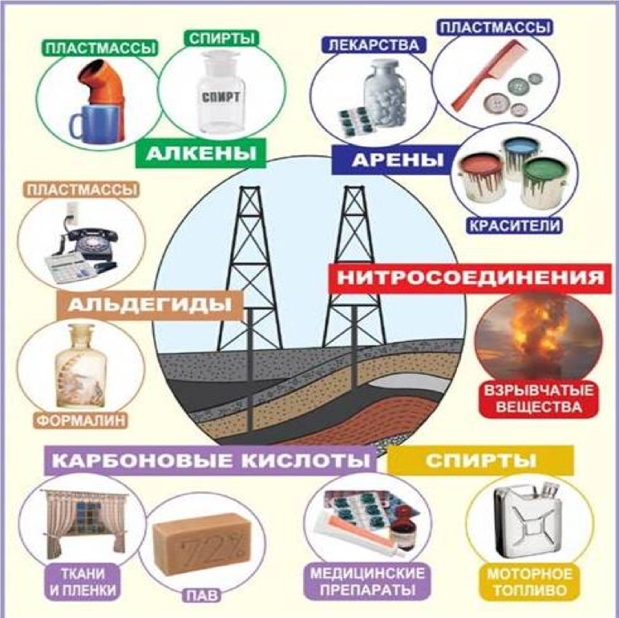

Нефть
Теория
Нефть — природная маслянистая горючая жидкость со специфическим запахом, состоящая в основном из сложной смеси углеводородов различной молекулярной массы и некоторых других химических соединений.
Нефть является одним из важнейших для человечества полезных ископаемых, а также известна с древнейших времён. Ещё примерно за 5000 лет до н. э. нефть и её образования использовались в качестве вяжущего материала в строительстве. Именно их — асфальт и битум — применяли при строительстве стен Вавилона.
Однако сама нефть появилась гораздо раньше, ведь процесс нефтеобразования занимает десятки и сотни миллионов лет. А образовалась она из органического вещества осадочных пород (т.е. из остатков древних живых организмов).
Топливо, получаемое из нефти
Отдельно следует выделить топливо, получаемое из нефти. Все его основные виды получают с помощью перегонки нефти. Иначе говоря, это разделение нефти на отличающиеся по составу фракции, основанное на различии в температурах кипения ее компонентов. Перегонку проводят в ректификационной колонне. Происходит она следующим образом:
В результате нагрева нефти в специальной трубчатой печи до 330 – 350°С образуется смесь паров нефти и неиспарившегося жидкого остатка, поступающая в ректификационную колонну с теплообменниками. Поднимаясь вверх, пары постепенно остывают и конденсируются на тарелках колонны, после чего выводятся из неё, а остальная часть паров поднимается дальше. Чем ниже температура кипения фракций, тем выше в колонне они конденсируются. При этом температурная разница между «уровнями» может составлять 5-8°С.
Таким образом, из нефти получают различные виды топлива, столь необходимого сегодня: бензин, керосин, дизельное топливо, мазут и некоторые другие.
Крекинг - вторичный процесс переработки нефтепродуктов. Это процесс расщепления молекул углеводородов , в результате которого образуются углеводороды с меньшим числом атомов углерода в молекуле.
С16Н34 → С8Н18 + С8Н16

Видео по теме
Практика
-
Нефть сложная смесь различных углеводородов.
-
Промышленный крекинг нефти был изобретён нашим соотечественником
-
Нефть – тяжелее воды и легко растворяется в воде.
-
Крекинг – это процесс расщепления углеводородов.
-
Нефть главный источник жидкого топлива.
-
Мазут превращают в бензин путем крекинга.
-
При нагревании нефти первым в парообразное состояние переходит керосин.
- Отвечает общей формуле рядя CnH2n-6
- Находит применение в пищевой промышленности.
- Применяется в качестве топлива
- Взаимодействует со щелочами
- Не образует изомеров
- Легкокипящая бесцветная жидкость, нерастворимая в воде, со своеобразным запахом.
- Образуется в процессе фотосинтеза.
- При нагревании разлагается на простые вещества
- Используют для получения растворителей, волокон, пластмасс.
- Содержится почти во всех органах растений: плодах, кореньях, листьях.
- Вступает в реакцию замещения с галогенами.
- Бесцветный газ, легче воздуха, образуется при гниении органических веществ, называется «болотным или рудничным газом».
- Бензол
- Бензол
- Метан
- Бензол
- Метан
- Бензол
- Бензол
- Метан
- Бензол
- Бензол
- Метан
- Метан
Лабораторная работа
Content